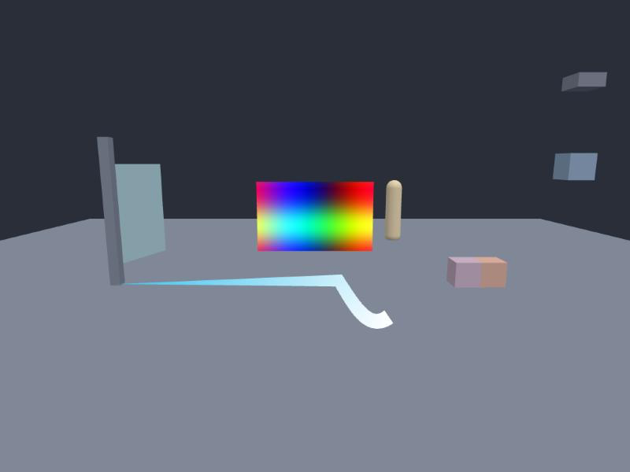

62 · Unity API: Physics 3D, joints and the camera
Goal: use Physics (3D), Rigidbody, 3D joints and the camera conversions with Unity's names. 3D physics is Havok; the queries below read the collider data directly, so they cover every collider (also several hits per ray) in the same frame.

Colliders#
Inspector ▸ + Add component ▸ collider: shape is box, sphere, capsule or cylinder. size is the box (or the capsule's height in size[1]), radius the sphere / capsule radius, offset shifts it. Without a size the collider is taken from the mesh. Classes: BoxCollider, SphereCollider, CapsuleCollider (height, radius).
Rigidbody#
Same members as Rigidbody2D, in 3D:
| Unity | Nord |
|---|---|
mass, drag, angularDrag, useGravity, isKinematic, velocity, angularVelocity (rad/s, Vector3), AddForce(force, ForceMode.Impulse/VelocityChange/Acceleration/Force), AddTorque, AddExplosionForce(force, position, radius, upwards) |
yes |
constraints = RigidbodyConstraints.FreezePositionX/Y/Z, FreezeRotationX/Y/Z, FreezePosition, FreezeRotation, FreezeAll |
each axis is held: the body does not move or turn about it. Inspector: freezePositionX…Z, freezeRotationX…Z. |
collisionDetectionMode Continuous, ContinuousDynamic, ContinuousSpeculative |
the physics step is cut into smaller pieces while such a body is fast (up to 8×), so a bullet cannot pass a thin wall |
interpolation |
stored but without a visual effect in 3D (Havok steps inside the render loop) |
File: scripts/Crate.js (new file, the whole file: a crate that slides on one axis)
import { MonoBehaviour, Rigidbody, RigidbodyConstraints, Vector3 } from 'nord';
export default class Crate extends MonoBehaviour {
Start() {
const rb = this.GetComponent(Rigidbody);
rb.constraints = RigidbodyConstraints.FreezePositionX | RigidbodyConstraints.FreezePositionZ | RigidbodyConstraints.FreezeRotation;
rb.collisionDetectionMode = 'Continuous';
rb.velocity = new Vector3(5, 0, 0); // sideways speed is removed: it can only fall (a lift)
}
}Queries#
All take a layerMask (default: all layers) and queryTriggerInteraction (QueryTriggerInteraction.Ignore / Collide / UseGlobal).
| Unity | Returns |
|---|---|
Physics.Raycast(origin, direction, maxDistance, mask) or Raycast(ray, maxDistance) |
one hit with collider (the entity; null for a miss), point, normal, distance, transform, rigidbody. A ray that starts inside a solid collider does not hit it (as in Unity). |
Physics.Linecast(a, b) |
|
RaycastAll(...), RaycastNonAlloc(origin, direction, results, maxDistance) → count |
every hit, sorted |
SphereCast(origin, radius, direction, maxDistance), SphereCastAll, SphereCastNonAlloc |
a fat ray |
BoxCast(center, halfExtents, direction, orientation, maxDistance), BoxCastAll, BoxCastNonAlloc |
a swept rotated box |
CapsuleCast(p1, p2, radius, direction, maxDistance), CapsuleCastAll, CapsuleCastNonAlloc |
|
OverlapSphere(center, radius), OverlapBox(center, halfExtents, orientation), OverlapCapsule(p1, p2, radius) and …NonAlloc |
arrays of the entities (use .name, .GetComponent, .CompareTag) |
CheckSphere, CheckBox, CheckCapsule |
a boolean |
ClosestPoint(point, collider) |
|
IgnoreCollision(a, b, ignore), GetIgnoreCollision, IgnoreLayerCollision(la, lb, ignore) |
the pair (or all objects on two layers) pass through each other |
Hits carry distance along the ray. A thick cast reports distance where its shape first touches (the centre of the sphere is centroid).
File: scripts/Ground.js (new file, the whole file: slope-aware ground check)
import { MonoBehaviour, Physics, Vector3 } from 'nord';
export default class Ground extends MonoBehaviour {
Update() {
const p = this.transform.position;
const hit = Physics.SphereCast(new Vector3(p.x, p.y + 0.5, p.z), 0.3, Vector3.down, 1.0); // a fat ray finds ledges a thin one misses
this.grounded = !!hit.collider;
if (this.grounded) this.slope = Vector3.Angle(hit.normal, Vector3.up);
for (const e of Physics.OverlapSphere(p, 3)) if (e.CompareTag('pickup')) this.log('near', e.name);
}
}Joints#
Inspector ▸ + Add component ▸ joint. Pick kind, connectedBody, anchor (in this object's space) and, for hinges, axis. Every Unity 3D joint is one Havok constraint with the right axes locked:
| Unity class | kind |
Properties |
|---|---|---|
HingeJoint |
hinge |
axis, useLimits, limits {min, max} (degrees), useMotor, motor {targetVelocity (deg/s), force} |
FixedJoint |
fixed |
|
SpringJoint |
spring |
spring (frequency Hz), damper (damping ratio), minDistance, maxDistance |
CharacterJoint |
ball |
lowTwistLimit.limit, highTwistLimit.limit, swing1Limit.limit, swing2Limit.limit (degrees) |
ConfigurableJoint |
configurable |
xMotion/yMotion/zMotion, angularXMotion/angularYMotion/angularZMotion (ConfigurableJointMotion.Locked/Limited/Free), linearLimit.limit, lowAngularXLimit, highAngularXLimit, angularYLimit, angularZLimit |
File: scripts/Hinge.js (new file, the whole file: a door that swings about its left edge)
import { MonoBehaviour, HingeJoint, Vector3, Rigidbody } from 'nord';
export default class Hinge extends MonoBehaviour {
Start() {
const j = this.AddComponent(HingeJoint);
j.connectedBody = this.entity.scene.find('Post').GetComponent(Rigidbody);
j.anchor = new Vector3(-1.5, 0, 0); // the door is 3 wide: its left edge
j.axis = new Vector3(0, 1, 0); // turn about the vertical axis
j.useLimits = true;
j.limits = { min: -110, max: 0 };
}
}enableCollision (default off: the two bodies pass through each other), connectedAnchor with autoConfigureConnectedAnchor. 3D joints do not report a break force (see the nice-to-have list).
The camera: Camera.main#
| Unity | Nord (3D) |
|---|---|
WorldToScreenPoint(p) |
Vector3(x, y, depth): x, y are canvas pixels (origin top-left, like Input.mousePosition), depth is the distance in front of the camera (negative behind it). |
ScreenToWorldPoint(Vector3(x, y, depth)) |
the world point depth in front of the camera. |
WorldToViewportPoint, ViewportToWorldPoint, ScreenToViewportPoint, ViewportToScreenPoint |
0..1 viewport coordinates |
ScreenPointToRay(p), ViewportPointToRay(p) |
a Ray (works with Physics.Raycast(ray, distance)) |
worldToCameraMatrix, projectionMatrix, cameraToWorldMatrix |
Matrix4x4 |
pixelWidth, pixelHeight, nearClipPlane, farClipPlane, fieldOfView |
File: scripts/Picker.js (new file, the whole file: click an object in 3D)
import { MonoBehaviour, Camera, Physics, UnityInput as Input } from 'nord';
export default class Picker extends MonoBehaviour {
Update() {
if (!Input.GetMouseButtonDown(0)) return;
const ray = Camera.main.ScreenPointToRay(Input.mousePosition);
const hit = Physics.Raycast(ray, 100);
if (hit.collider) this.log('clicked', hit.collider.name, 'at', hit.point.toString());
}
}In 2D the same members work with ScreenToWorldPoint returning world pixels (z is ignored) and ScreenPointToRay returning a ray at that point.
Check yourself#
- Open
examples/physics-lab-3d, runawait __lab.selfTest()in the browser console: 22 checks (RaycastAll, SphereCast, BoxCast, CapsuleCast, overlaps, camera round trip, hinge, fixed, spring, constraints, IgnoreCollision, layers, continuous detection, motor) pass. - A
SphereCastreports a hit where aRaycastalong the same line misses: the thick shape touches the ledge.
Next: Lines, trails, masks and shapes. Back to: Physics 2D.